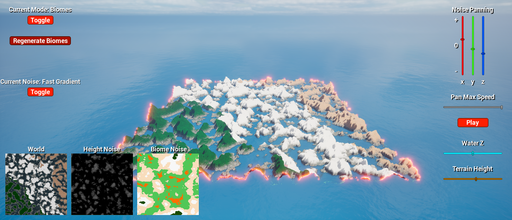
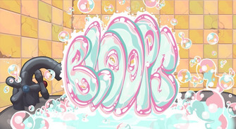
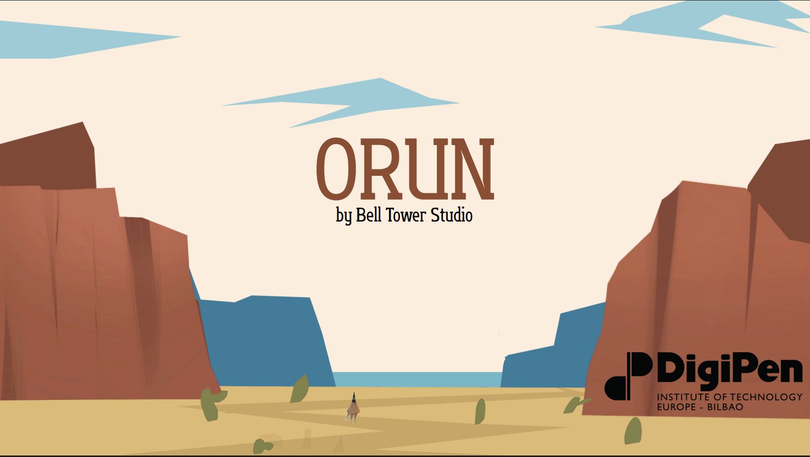

Game AI Systems & Navigation
Efficient A*, Behavior Trees, Terrain Analysis, and Terrain Themer for game AI systems.
Learn More
BLOOPS
48-hour global game jam: rapid prototyping, gameplay systems, and execution under time constraints.
Learn More
Orun (Study Abroad)
Unreal Engine project during study abroad, featuring environment design and gameplay implementation.
Learn More